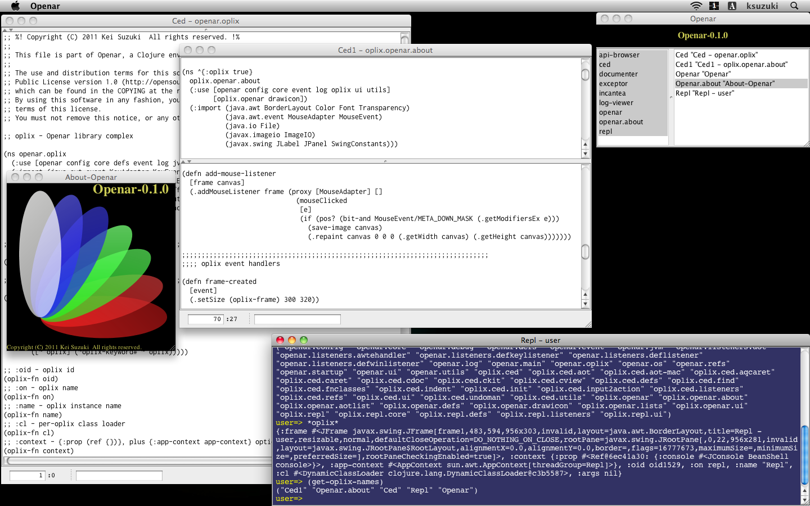
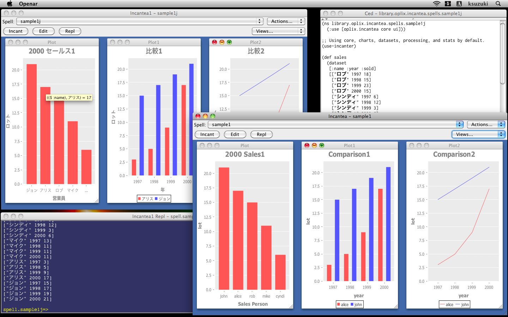

Openar is a Swing-based, interactive Clojure environment written in Clojure. In Openar you can run application called oplix. Openar comes with bunch of oplixes, such as REPL, Clojure editor Ced, and Incanter front-end Incantea. With help of these oplixes and powerful Clojure libraries you can learn and study Clojure, try out your ideas and run your projects, and even develop your own oplixes, all in Clojure interactively.


This version of Openar is an early experimental, proof-of-concept version. Lots of features that are supposed to be in this kind of system are missing; menus, syntax highlighting and autocomplete in Ced, functions and oplixes for file system and project management, customization and refactoring tools, oplix UI design and development facilities, etc. Small part is still written in Java.